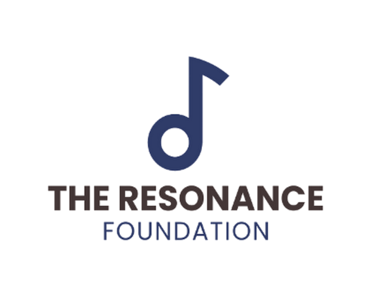
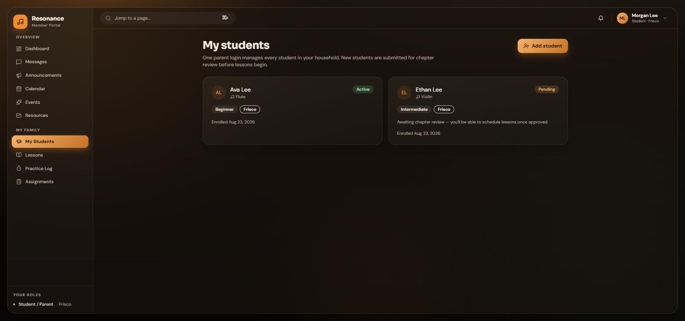
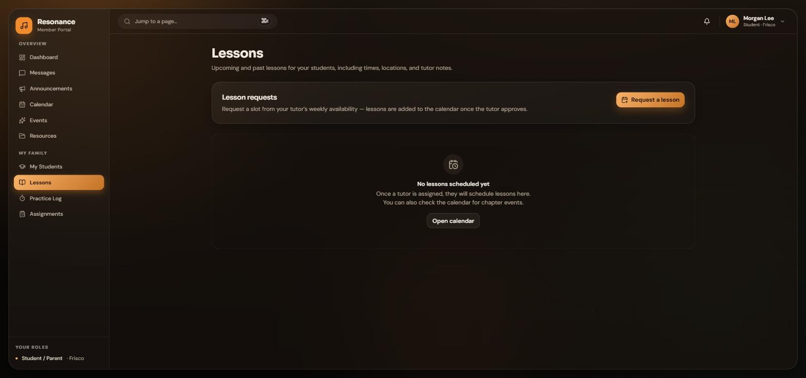
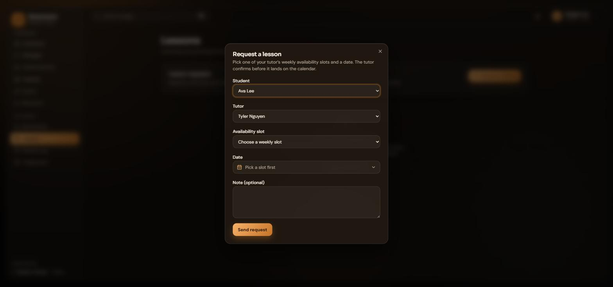
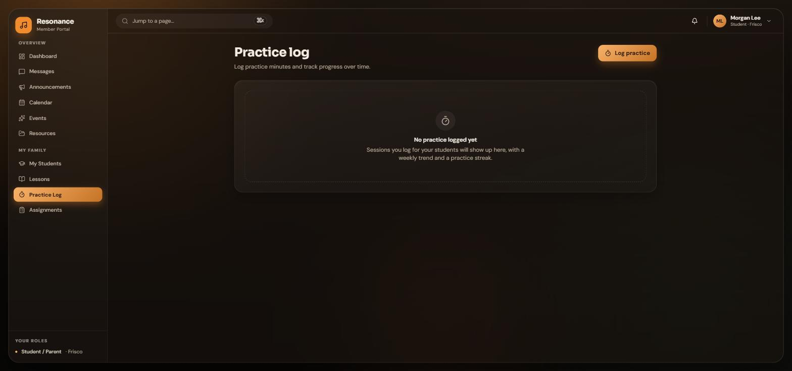

Getting your child from signed up to playing music, with completely free lessons every step of the way.
One parent login manages your whole household. Start by adding each child you would like enrolled.

Every lesson is completely free. Group and individual lessons both cost nothing, always. If anything ever appears to ask you for payment for a lesson, something is wrong; please tell us.
Once a student is approved and matched with a tutor, the Lessons page is where scheduling happens.


Two small habits make lessons dramatically better: logging practice and checking assignments.

Portal messages involving students can be reviewed by chapter leadership when there is a concern. It is one of the ways we keep every conversation appropriate and every student safe.
Questions or something broken? Email administrator@theresonancefoundation.org and a real person will get back to you.